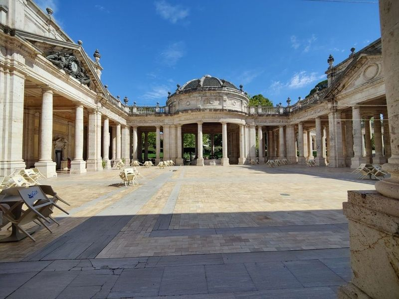
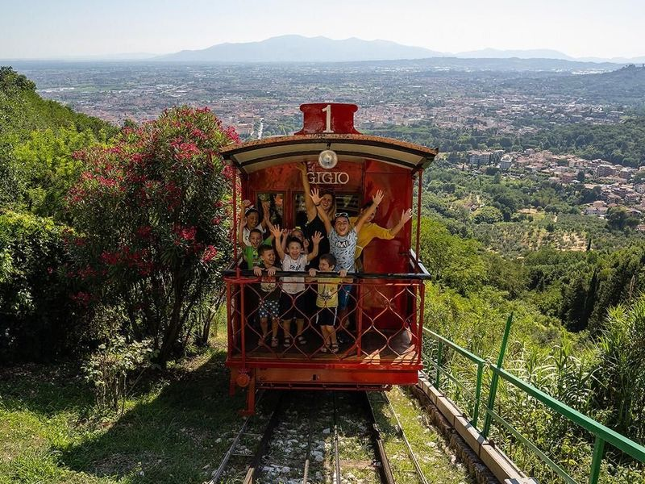
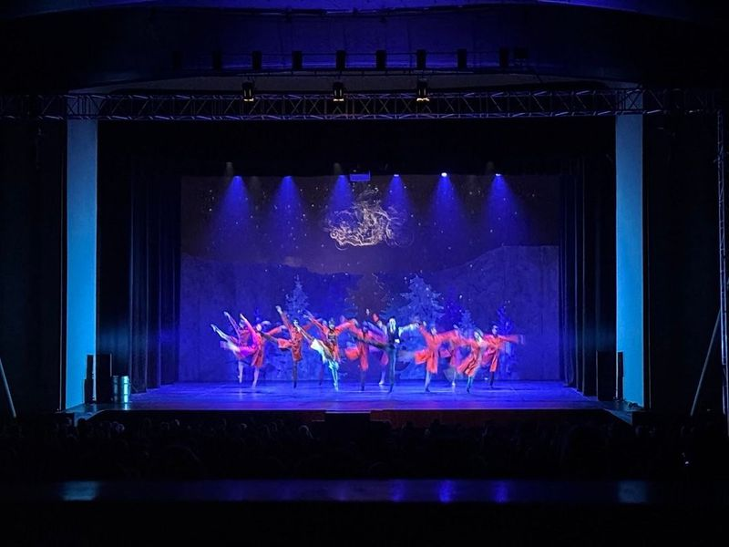
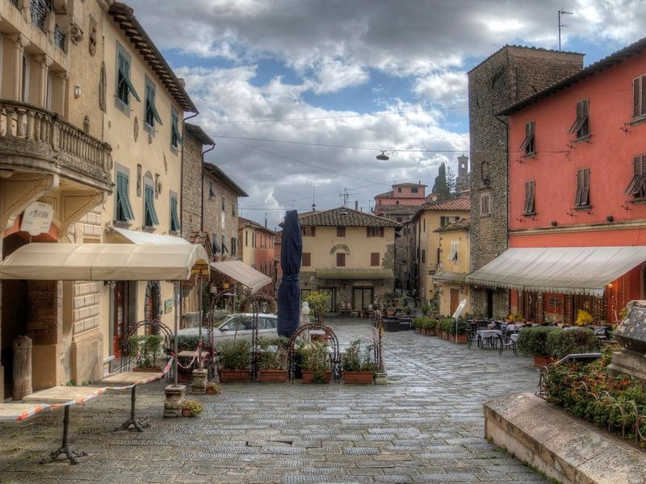
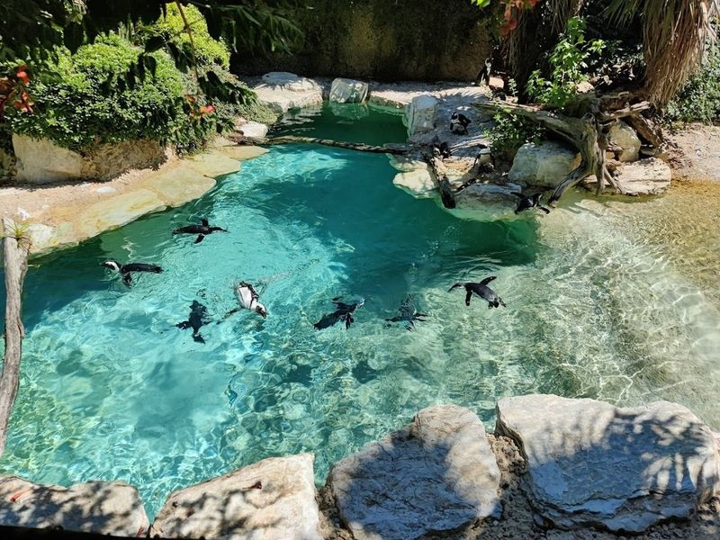
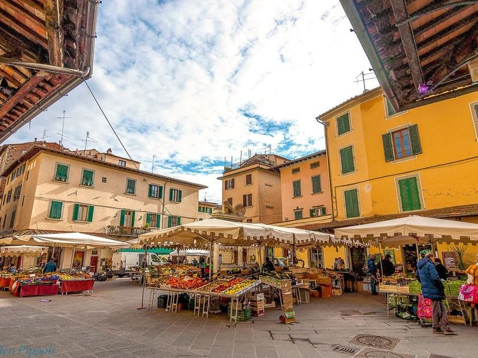
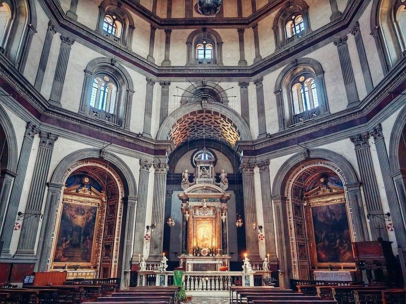
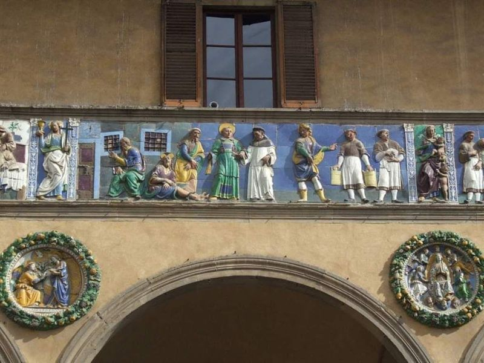
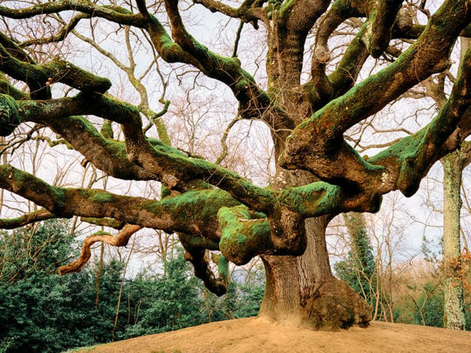
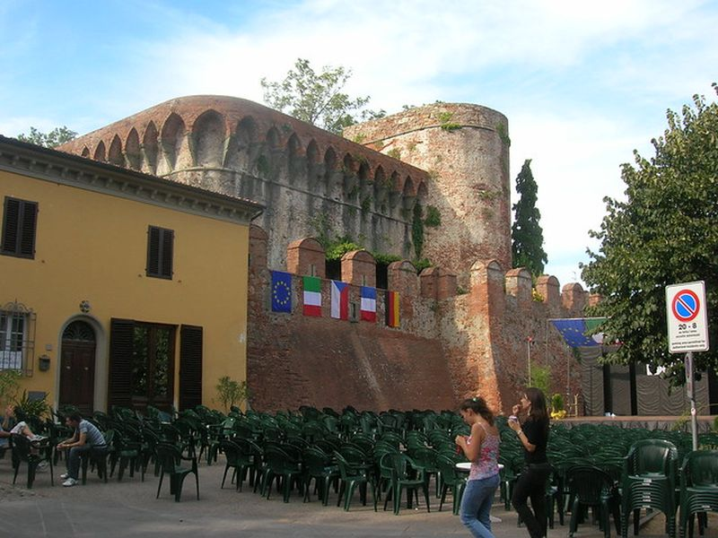

Explore Montecatini Terme
A Brief History
Montecatini Terme grew in the eighteenth and nineteenth centuries around thermal springs that Grand Duke Leopold of Tuscany promoted as a regulated spa destination on the road between Florence and Lucca. Liberty-style bath pavilions, hotels, and the funicular to the upper medieval castle formed a planned resort for bourgeois and later international guests. While surrounding marshland was drained for agriculture, the spa quarter kept its arcades and park avenues as Tuscany's principal belle-époque watering place.
Attractions Map
Top Sights & Activities

Terme Tettuccio
Terme Tettuccio is a renowned thermal spa in Montecatini, known for its historical significance and picturesque surroundings. The building, constructed between 1779-81 and renovated in 1928, boasts an impressive garden featuring various trees and ornate structures such as colonnades, grandstands, fountains, and flower beds. The entrance is adorned with colored glass panels and a bronze pool adds to the allure of the establishment.

Stazione Funicolare di Montecatini Terme
The Funicolare di Montecatini, also known as the Montecatini Funicular, offers a unique and enjoyable way to explore the city. This cable car system transports travellers from Montecatini Terme to Montecatini Alto, providing access to the historic village and panoramic views of the area. The steep incline of 39.5% adds an exciting element to the experience.

Nuovo Teatro Verdi Srl
Nuovo Teatro Verdi Srl, located on Viale Verdi in Montecatini Terme, is a popular venue that hosts a diverse range of performances. From operas to musicals and more, the theater offers an array of entertainment options throughout the year. The site is catalogued as a tourist attraction.

Borgo di Montecatini Alto
in the hills, Borgo di Montecatini Alto is a destination that feels like stepping into a fairytale. Once the seat of the municipality until 1905, this enchanting village boasts historical ruins and artifacts that transport back in time. A ride on the funicular railway offers views as ascend to this picturesque locale.

Zoo of Pistoia
The Zoo of Pistoia is a venerable zoo and amusement park that houses over 600 animals, including mammals, birds, reptiles, and amphibians. The environment aims to closely replicate the natural habitats of the animals. travellers can encounter various species such as brown bears, lynx, tigers, lions, giraffes, colorful parrots, rare lemurs from Madagascar and other endangered species from around the world.

Piazza della Sala
in the heart of Pistoia, Piazza della Sala is a captivating square that dates back to the 12th century. This lively hub features the Il Pozzo del Leoncino, or Well of the Little Lion, which serves as a centerpiece. Each day (except Sundays), travellers can explore a colorful market brimming with fresh fruits and vegetables from local producers.

Shrine Basilica of Our Lady of Humility
The Shrine Basilica of Our Lady of Humility is a architectural gem that dates back to the 15th century. Its captivating dome, crafted by the talented Giuliano da Sangallo, showcases Pistorian architecture at its . The facade features an intriguing design with irregular stone rows and a double-pitched roof, highlighted by a grand entrance portal framed by projecting elements that create depth around the Corinthian columns.

Museo dello Spedale del Ceppo
The Museo dello Spedale del Ceppo, located in Piazza Giovanni XXIII, is a 16th-century hospital with a rich history dating back to the 13th century. It played a crucial role during the Black Plague and features decorations by renowned terracotta decorators Benedetto Buglioni and Giovanni della Robbia. The museum showcases a frieze depicting theological and cardinal virtues, emphasizing the theme of assistance and mercy.

Il Quercione
The site is catalogued as a tourist attraction. The site is catalogued as a tourist attraction. The site is catalogued as a tourist attraction. Il Quercione is listed among principal sites for Montecatini Terme within Italy. Municipal and regional heritage listings document its place in the historic centre and travellers routes through Montecatini Terme.

Fortezza di Montecarlo
Fortezza di Montecarlo is a historic fortress in Montecarlo, Italy, offering panoramic views of the Tuscan landscape. travellers can explore the well-preserved medieval architecture and learn about the fort's strategic significance in the region's history.